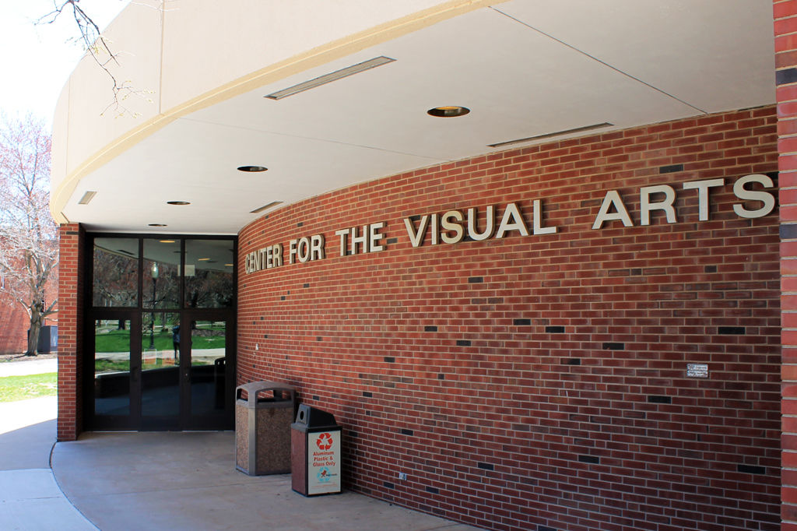

Basic Information
Address: Campus Box 5750
Phone: (309) 438-2875
Director: Rose Marshack
Degrees Offered: B.A., B.S.
What is a Major in Creative Technologies?
The interdisciplinary Creative Technologies major emphasizes design and practice in the integration of digital technologies and the fine arts. In addition to foundational study across the fine arts, the major provides training and experiences across a range of creative/technical fields including video, sound, electronic music, music production, gaming, motion graphics, interactivity, AR/VR, UI/UX, mobile, web, and computer programming concepts.
Sequences in Creative Technologies
Audio and Music Production Sequence
The Audio and Music Production sequence provides concentrated study in sound recording, audio production, sound design, music composition, theory, and business and entrepreneurship practices, along with a host of elective experiences across a range of creative/technical fields including video, sound, electronic music, music production, gaming, motion graphics, interactivity, AR/VR, UI/UX, mobile, web, and computer programming concepts.
Sequence in Game Design
Game Design sequence provides concentrated study in game design and production, along with a host of elective experiences across a range of creative/technical fields including video, electronic music, music production, motion graphics, interactivity, AR/VR/XR, UI/UX, mobile, web, and computer programming concepts.
Sequence in Interdisciplinary Technologies
The Interdisciplinary Technologies sequence provides concentrated study in mobile, web and computer programming concepts, UI/UX, motion graphics, and interactivity along with a host of elective experiences across a range of creative/technical fields including sound, electronic music, music production, AR/VR/XR, and game design.